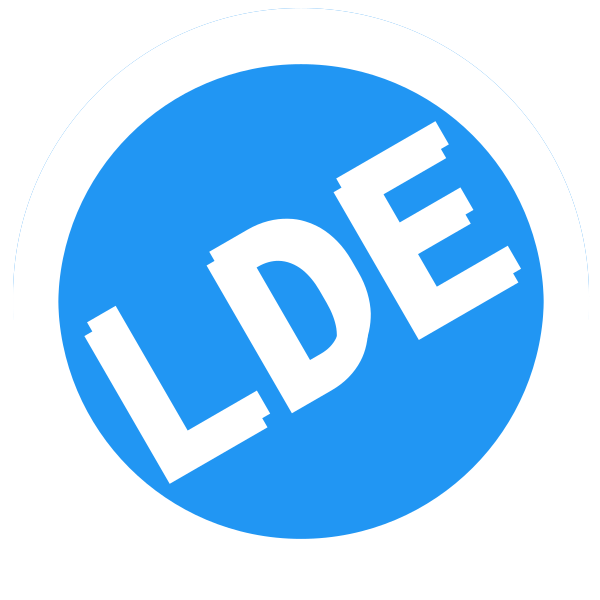
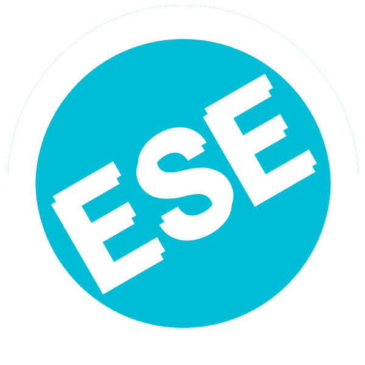

A DOUTRINA
Informação
Aumente a largura de sua janela de navegação ou use seu dispositivo no modo deitado para visualizar o painel de links externos.
Aumente a largura de sua janela de navegação ou use seu dispositivo no modo deitado para visualizar o painel de links externos.
Inspirados nos esforços de Kardecpedia e Luz Espírita, criamos esta coletânea digital. Aqui você encontrará as cinco obras básicas do Espiritismo, codificadas por Allan Kardec, e traduzidas por Guillon Ribeiro. Elas foram ligeiramente modificadas por Sergio SHKLR para o propósito do estudo ativo, seja este pessoal ou em grupo. Esperamos que seja um bom recurso para conectar os ensinamentos do Espírito da Verdade com a informação livremente disponível dos dias de hoje.
-  O Livro dos Espíritos (LDE)
- O Livro dos Médiuns (LDM)
-  O Evangelho segundo o Espiritismo (ESE)
 O Céu e o Inferno (CEU)
O Céu e o Inferno (CEU)- A Gênese (GEN)
Melhoramentos presentes:
- plataforma open-source de anotações Hypothes.is
- painel de links externos (deite seu dispositivo, caso não o veja)
- experiência totalmente gratuita e livre de distrações ou elementos desnecessários
- numerais romanos foram substituídos por números
- botões para: aumentar/diminuir letras; escurecer/clarear tela; tela cheia/normal; ir para o topo da página
- ordem de Prefácios e Introduções foi feita uniforme entre as obras
- no Sumário, títulos de capítulos foram modificados/encurtados para clareza
- use o Google Dicionário para pesquisar o significado de palavras
Melhoramentos futuros:
- links externos para artigos pertinentes da Wikipédia
- links internos entres as próprias obras
- website configurado como app tipo PWA, podendo ser instalado direto de seu browser
- cores e tipografia serão utilizadas para realçar a origem de textos. Por exemplo:
- azul com serifa para comunicações espirituais
- preto com serifa para Allan Kardec
- passagems biblícas em serifa itálico, vermelho para Jesus e preto para os demais.
- cinza sem serifa para comentários de terceiros
- citações da Bíblia de Port Royal serão substituídas pela versão Almeida Revista e Atualizada 1. Links para o capítulo completo serão adicionados para dar contexto.
- ilustrações não obstrusivas, abertas pelo link de texto
- no Livro dos Espíritos, respostas e comentários às perguntas só serão visíveis após clicar no botão 2
- calendário de leitura diária. Leia todos os cinco livros em apenas um ano. Somente umas 5 páginas por dia.
Em um futuro mais distante, podemos até adicionar links para vídeos de re-encenações bíblicas, vindos de projetos como o The Chosen, Bible Project, LDS, ou filmes como Mary Magdalene, Son of God, etc.
Deus sempre abençoa.
1. A bíblia de Louis-Isaac Lemaistre de Sacy só se encontra no original Francês.
2. Isto foi feito de modo a estimular a reflexão ativa ao invés da leitura mecânica.